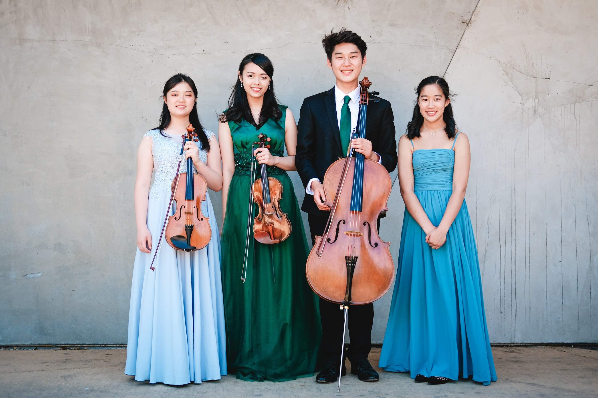

About Me


Thomas Lim, Cellist
New York City based cellist, performer, and artist.
Applauded for his “warm tone and powerful musical interpretations,” Cellist Thomas Lim (b. 2001) has brought his performances to audiences across the world in North America,
Europe, and Asia. Named a National YoungArts Foundation Winner in 2019, Thomas is the recipient of numerous awards including prizes at competitions including the
Juilliard Concerto Competition, Colubmia University Orchestra Concerto Competition, New York International Artists Association Cello Competition, MTAC VOCE Competition, Korea Times Music Competition,
Montgomery Symphony Orchestra Blount-Slawson Young Artists' Competition, the Lewisville Lake Symphony Orchestra Concerto Competition, and the Coeur d'Alene Concerto Competition.
A sensitive chamber musician, Thomas has a diverse chamber music repertoire ranging from the standard literature to works of the 21st century.
He has studied chamber music with globally esteemed artists including Joel Krosnick, Robert McDonald, Joseph Lin, Jerome Lowenthal, Natasha Brofsky,
Soovin Kim, Gilbert Kalish, David Finckel, Nicholas Mann, Daniel Phillips, Patricia McCarty, and members of the Emerson, Juilliard, Tokyo, Orion, American,
Schumann, Formosa, Alexander, and Escher String Quartets. Thomas has performed under the batons of Yannick Nezet-Seguin, Jeffrey Milarsky, David Robertson, Eric Jacobsen,
at significant concert halls such as Carnegie Hall, Alice Tullly Hall, The Kennedy Center, among others.
Thomas has appeared studied with and received important impulses from some of the world's most distinguished cellists including Lynn Harrell, Mischa Maisky, Frans Helmerson,
Laurence Lesser, Joel Krosnick, Hans Jorgen Jensen, Lluis Claret, and Clive Greensmith. Over the summers, Thomas has made appearances at the Music@Menlo Chamber Music Institute,
Kneisel Hall Chamber Music Festival, Meadowmount School of Music, and Orford Musique. His former teachers include Jonathan Koh of the San Francisco Conservatory of Music and Minja Hyun
of Yonsei University in Seoul, Korea.
Currently an Master of Music candidate at The Juilliard School studying with Dr. Darrett Adkins and Ms. Natasha Brofsky,
Thomas earned his Bachelor of Arts degree, Magna cum Laude from Columbia College of Columbia University in the City of New York in Computer Science and Mathematics
while concurrently studying at the Juilliard School through the prestigious Columbia-Juilliard joint program. He additionally holds a Master of Science degree from
the Fu Foundation School of Engineering and Applied Sciences at Columbia University in Computer Science with a focus in Natural Language Processing through the acceleterated M.S. express program.
He plays a beautiful Italian cello ca. 1750 attributed to Venice, and a 19th century German bow, the latter of which is generously loaned by the Juilliard School.
In his free time, Thomas enjoys visiting museums, solving coding problems, playing tennis, and practicing calligraphy.
He currently resides in New York, NY.
Calendar
Upcoming Events
Graduation RecitalMay 2, 20243:00 PM Paul Hall, Juilliard |
Past Events
2024 |
Masterclass with Frans HelmersonFeb 16, 20241:30 PM The Juilliard School Prokofiev: Sinfonia Concertante, Op. 125 |
2023 |
Brahms Piano QuintetDecember 17, 20233:00 PM Morse Hall J. Brahms: Piano Quintet in F Minor, Op. 34 |
Haydn Cello Concerto in D MajorDecember 21, 20237:00 PM Midwest Clinic, Chicago, IL Haydn: Concerto No. 2 in D Major, Hob. VIIb/2 |
Haydn Cello Concerto in D MajorDecember 6, 20237:00 PM McAfee Performing Arts Center, Saratoga, CA Haydn: Concerto No. 2 in D Major, Hob. VIIb/2 |
Beethoven String Quartet, Op. 18/6December 10, 20238:00 PM Morse Hall L.V. Beethoven: String Quartet No. 6 in Bb Major, Op. 18, No. 6 |
Juilliard Orchestra with Jaime Laredo and Jennifer KohDecember 1, 20237:30 PM Kennedy Center, Washington D.C. J.S. Bach: Concerto for Two Violins, Strings and Continuo in D minor, BWV 1043, “Double Concerto” P. Glass: Echorus D. Ludwig: Seasons Lost Anna Clyne: Prince of Clouds W.A. Mozart: Sinfonia Concertante in E-flat major, K. 364 |
Music for Food: NYC ChapterNovember 2, 20237:30 PM Broadway Presbyterian Church, New York, NY Kaija Saariaho: Neiges for Cello Octet |
Vox Celli: Juilliard Cello EnsembleOctober 3, 20237:30 PM Peter Jay Sharp Theater at Lincoln Center Arvo Pärt: Fratres for 12 Cellos Gity Razaz: The Strange Highway Heitor Villa-Lobos: Bachianas Brasileiras No. 5 |
Cidnay International Masterclass Series: ConcertSeptember 5, 20239:30 PM Teatro Narcisso Ferreira, Santo Tirso, Portugal S. Prokofiev: Sinfonia Concertante in E Minor, Op. 125 |
Masterclass with Mischa MaiskySeptember 4, 202310:45 AM Alberto Carneiro Arts Center, Santo Tirso, Portugal S. Prokofiev: Sinfonia Concertante in E Minor, Op. 125, II. Allegro Giusto |
Cidnay International Masterclass Series: Cello Quartet PerformanceSeptember 3, 20235:30 PM Fábrica de Santo Tirso - Nave Cultural, Santo Tirso, Portugal B. Bartok: Tanzlied aus Poniki for Four Cellos A. Bruckner: Locus iste for Four Cellos J. Werner: Elegie for Four Cellos, Op. 21 G. Paque: Souvenir de Curis |
Masterclass with Mischa MaiskySeptember 2, 20232:30 PM Centro de Arte Alberto Carneiro, Santo Tirso, Portugal Prokofiev: Sinfonia Concertante in E Minor, Op. 125, I. Andante, II. Allegro Giusto |
Kneisel Hall Chamber Music FestivalAugust 12, 20235:00 PM Kneisel Hall, Blue Hill, ME L.V. Beethoven: String Quartet No. 7 in F Major, Op. 59, No. 1 |
Kneisel Hall Chamber Music FestivalAugust 12, 20232:00 PM Kneisel Hall, Blue Hill, ME W.A. Mozart: Piano Trio in E Major, K.452 |
Kneisel Hall Chamber Music FestivalAugust 10, 20232:00 PM Kneisel Hall, Blue Hill, ME R. Schumann: Piano Quartet in Eb Major, Op. 47 |
Masterclass with Natasha BrofskyJuly 31, 20237:30 PM Kneisel Hall, Blue Hill, ME R. Schumann: Piano Quartet in Eb Major, Op. 47 |
Kneisel Hall Chamber Music FestivalJuly 25, 20237:30 PM Kneisel Hall, Blue Hill, ME Ezequiel Viñao: String Quartet II "The Loss and the Silence" |
Kneisel Hall Chamber Music FestivalJuly 17, 20232:00 PM Kneisel Hall, Blue Hill, ME D. Shostakovich: String Quartet No. 4 in D Major, Op. 83 |
Masterclass with Ezequiel ViñaoJuly 12, 20237:30 PM Kneisel Hall, Blue Hill, ME Ezequiel Viñao: String Quartet II "The Loss and the Silence" |
Solo Recital with Luiz Ortiz, pianoTuesday, May 9, 20238:00 PM Paul Hall P. Hindemith: Sonata for Solo Cello, Op. 25, No. 3 J.S. Bach: Chaccone from Partita No. 2 in D Minor J. Brahms: Sonata No. 2 in F Major, Op. 99 |
Dvorak Dumky TrioSunday, April 30, 20236:00 PM Morse Hall A. Dvorak: Piano Trio No. 4 in E Minor "Dumky" Cheng Io Lo, violin Thomas Lim, cello Anne Liu, piano |
Masterclass with Frans HelmersonTuesday, April 25, 20237:30 PM The Juilliard School P. Hindemith: Solo Sonata, Op. 25, No. 3 |
Masterclass with Lluis ClaretSaturday, April 15, 20237:00 PM Carriage House Violins, Boston Showroom P. Hindemith: Solo Sonata, Op. 25, No. 3 |
Spring ChamberFest 2023Monday, March 13, 20234:30 PM Paul Hall A. Schoenberg: Verklärte Nacht |
Wednesdays at One: Lab OrchestraWednesday, February 23, 20236:30 PM Alice Tully Hall C. Weber: Oberon Overture A. Copland: Our Town A. Berg: Sieben frühe Lieder Z. Kodály: Dances of Galánta |
Juilliard Orchestra with Carlos Miguel PrietoSaturday, February 18, 20236:30 PM Alice Tully Hall D. Shostakovich: Symphony No. 9 in Eb Major |
ChamberFest 2023Wednesday, January 11, 20236:30 PM Paul Hall A. Dvorak: Piano Quintet in A Major |
2022 |
Schubert: Piano Trio No. 1 in Bb MajorSunday, December 4, 20226:30 PM Morse Hall F. Schubert: Piano Trio No. 1 in Bb Major |
Dvorak: Piano Quintet in A MajorSunday, November 27, 20226:30 PM Morse Hall A. Dvorak: Piano Quintet in A Major |
Juilliard Orchestra with Jeffrey MillarskySunday, November 21, 20226:30 PM Alice Tully Hall S. Barber: Vengeance of Medea M. White: Viola Concerto P. Tchaikovsky: Symphony No. 6 in B Minor "Pathetique" |
Juilliard Concerto Competition FinalsSunday, November 17, 20226:30 PM Paul Hall A. Schoenberg: Concerto in D Major after G.M. Monn |
Masterclass with Fred SherrySunday, October 17, 20225:00 PM Juilliard School A. Schoenberg: Concerto in D Major after G.M. Monn |
Orford Musique: Beaux concerts de la relèveThursday, June 9, 20227:00 PM Salle Gilles-Lefebvre, Orford, QC J. Brahms: Sonata No. 2 in F Major, Op. 99 |
Columbia University Emeritus Professors' Series: Lecture PerformanceThursday, April 1, 20227:00 PM Columbia University F. Schubert: Arpeggione Sonata in A Minor, D 821 |
Midday Music SeriesThursday, March 9, 20227:00 PM Columbia University Maison Française F. Schubert: Arpeggione Sonata in A Minor, D 821 |
Chamberfest 2022Thursday, March 9, 20227:00 PM Paul Hall J. Zarebski: Piano Quintet in G Minor, Op. 34 |
Solo Recital with Luis Ortiz, pianoThursday, February 18, 20227:00 PM Morse Hall J.S. Bach: Suite No. 6 in D Major, BWV 1012: Prelude, Courante I. Xenakis: Kottos (1977) F. Schubert: Arpeggione Sonata in A Minor, D 821: I. Allegro Moderato F. Price: Adoration M. Rostropovich: Humoresque, Op. 5 |
2021 |
Midday Music SeriesThursday, November 9, 20217:00 PM Columbia University Maison Française J. Barrière: Duo Sonata in G Major Thomas Lim, Sasha He, cellos |
In Progress... |
Media
Photos and Video
- All
- Solo
- Chamber
- Arrangements
- Photos
Repertoire
Repertoire
Concertos & Works for Orchestra
Dvorak: Concerto in B Minor, Op. 104
Haydn: Concerto in C Major, Hob. VIIb: No. 1
Haydn: Concerto in D Major, Hob. VIIb: No. 2
Kabalevsky: Concerto No. 2 in C Minor, Op. 77
Lalo: Concerto in D Minor
Prokofiev: Sinfonia Concertante, Op. 125
Saint-Saens: Concerto No. 2 in D Minor, Op. 119
Schoenberg: Concerto in D Major after G.M. Monn
Schumann: Concerto in A Minor, Op. 129
Shostakovich: Concerto No. 1 in Eb Major, Op. 107
Tchaikovsky: Variations on a Rococo Theme, Op. 33
Vivaldi: Concerto in G Minor for Two Cellos, RV 531
Solo Works
J.S. Bach: Suite No. 1 in G Major, BWV 1007
J.S. Bach: Suite No. 2 in D Minor, BWV 1008
J.S. Bach: Suite No. 3 in C Major, BWV 1009
J.S. Bach: Suite No. 4 in Eb Major, BWV 1010
J.S. Bach: Suite No. 5 in C Minor, BWV 1011
J.S. Bach: Suite No. 6 in D Major, BWV 1012
J.S. Bach: Chaccone from Partita No. 2 in D Minor, BWV 1004
Franchomme: 12 Caprices, Op. 7 - Selections
Colridge-Taylor Perkinson: Lamentations (1973) - Selections
Piatti: 12 Caprices, Op. 12 - Selections
Popper: 40 Etudes, Op. 73 - Selections
Xenakis: Kottos (1977)
Isang Yun: Glissées for Solo Cello (1970) - Selections
Works for Cello & Piano
J.S. Bach: "Arioso" from Catata No. 156
Cassado: Dance of the Green Devil
Chopin: Introduction and Polonaise Brillante, Op. 3
Davidov: At the Fountain, Op. 20, No. 2
Dvorak: Rondo in G Minor, Op. 94
Faure: Elegie, Op. 24
Faure: Après un Rêve
Haydn-Piatigorsky: Divertimento in D Major
Price: Adoration (arr. Thomas Lim)
Rachmaninoff: Vocalise, Op. 34
Rostropovich: Humoresque, Op. 5
Saint-Saens: Le Cygne
Schumann: Adagio and Allegro, Op. 70
Schumann: Fünf Stücke im Volkston, Op. 102
Van Goens: Scherzo, Op. 12
Sonatas
Beethoven: Sonata No. 4 in C Major, Op. 102, No. 1
Beethoven: Sonata No. 5 in D Major, Op. 102, No. 2
Brahms: Sonata No. 1 in E Minor, Op. 38
Brahms: Sonata No. 2 in F Major, Op. 99
Britten: Sonata in C Major, Op. 65 - Selections
Eccles: Sonata in G Minor
Locatelli: Sonata in D Major - Selections
Prokofiev: Sonata in C Major, Op. 119
Rachmaninoff: Sonata in G Minor, Op. 19
Sammartini: Sonata in G Major
Schubert: Arpeggione Sonata in A Minor, D 821
Shostakovich: Sonata No. 2 in D Minor, Op. 40
Vivaldi: Sonata No. 5 in E Minor, RV 40
Chamber
Piano Trios
Arensky: Piano Trio in D Minor
Beethoven: Piano Trio in C Minor, Op. 1, No. 3
Brahms: Piano Trio No. 1 in B Major, Op. 8
Mozart: Piano Trio in E Major, K.542
Schoenfield: Café Music
Schubert: Piano Trio No. 1 in Bb Major
Schumann: Piano Trio No. 1 in D Minor
Shostakovich: Piano Trio No. 2 in E Minor
Smetana: Piano Trio in G Minor, Op. 15
String Quartets
Beethoven: String Quartet in F Major, Op. 18, No. 1
Beethoven: String Quartet in Bb Major, Op. 18, No. 6
Beethoven: String Quartet in F Major, Op. 59, No. 1 "Razumovsky"
Ginastera: String Quartet No. 1, Op. 20
Grieg: String Quartet in G Minor
Haydn: String Quartet in D Major, Op. 64, No. 5
Mozart: Divertimento in D Major, K. 136
Mozart: String Quartet No. 13 in D Minor, K. 173
Puccini: I Crisantemi, SC 65e
Schubert: String Quartet No. 14 in D Minor "Death and the Maiden"
Shostakovich: String Quartet No. 3 in F Major
Shostakovich: String Quartet No. 4 in D Major
Verdi: String Quartet in E Minor
Viñao: String Quartet No. 2 "The Loss and the Silence"
Piano Quartets & Quintets
Brahms: Piano Quintet in F Minor
Dvorak: Piano Quartet in Eb Major
Dvorak: Piano Quintet in A Major
Schumann: Piano Quartet in Eb Major
Schumann: Piano Quintet in Eb Major
Zarebski: Piano Quintet in G Minor, Op. 34
Larger Ensembles
Brahms: Sextet No. 1 in Bb Major
Mendelssohn: Octet in Eb Major, Op. 20
Schoenberg: Verklärte Nacht, Op. 4
Tchaikovsky: Souvenir de Florence
Cello Ensemble
Barrière: Sonata in G Major for Two Violoncellos
Fitzenhagen: Concert-Walzer for Four Cellos
Pärt: Fratres for 4, 8, or 12 Cellos
Razaz: The Strange Highway for Cello Octet
Saariaho: Neiges for Cello Octet
Villa-Lobos: Bachianas Brasileiras No. 5 for Soprano and Cello Orchestra
Werner: Elegie for Four Cellos
Teaching
Cello Lessons NYC

With years of teaching experience under my belt, I am a dedicated teacher helping students of all ages and levels reach their musical goals.
I believe that with the right mentor, anyone can learn to play the cello and learn to love music. I offer lessons
in person in New York, or online, and strive to create a dynamic, engaging learning enviornment in any teaching modality.
For each student, I personally craft a curriculum consiting of repertoire, technique, etudes, theory, and more.
Whether you are just starting out on the cello, or want to improve your skills, I can help you achieve your goals!
Teaching Values
Inspiring Musicality
Commitment to Excellence
Long Term Growth
Mutual Respect & Responsibility
Contact
Contact Me
Location
Manhattan, New York